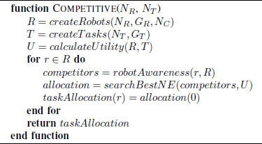
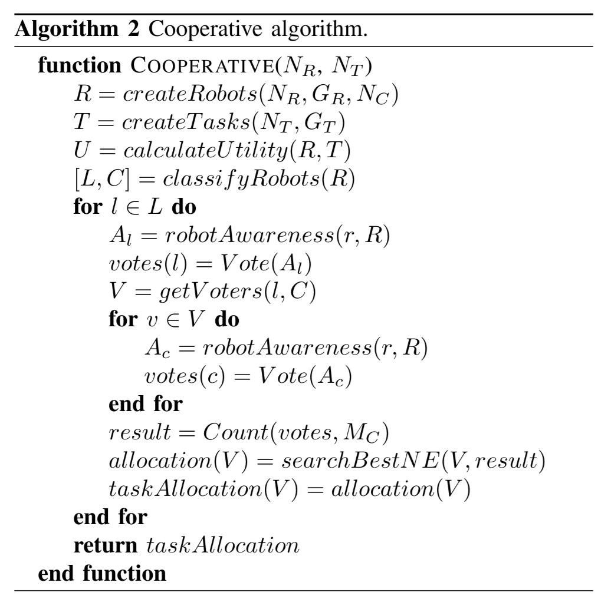
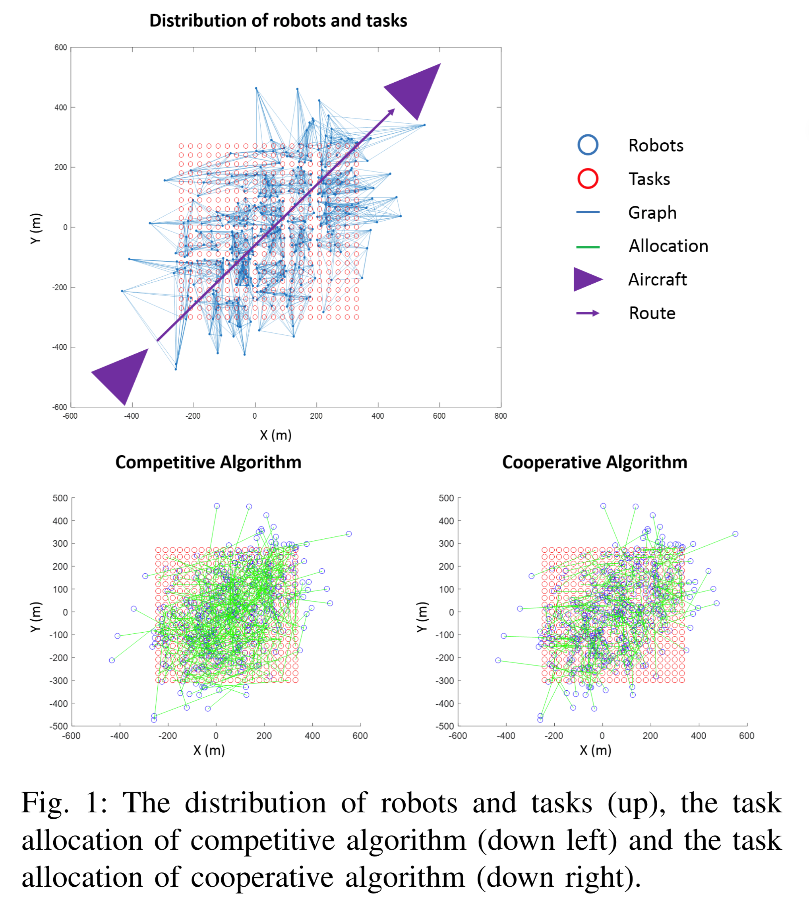

Should We Compete or Should We Cooperate? Applying Game Theory to Task Allocation in Drone Swarms
我们应该竞争还是应该合作？将博弈论应用于无人机集群中的任务分配
- Published in: 2018 IEEE/RSJ International Conference on Intelligent Robots and Systems (IROS)
- Date of Conference: 01-05 October 2018
Abstract:
Let's imagine a swarm of drones that has to visit some locations and build a map in a disaster area. Let's assume the drones only can communicate to their neighbors and manage partial information of the mission. A relevant question in this scenario is “Should the robots compete or should they cooperate?”. This work analyzes the described scenario to answer this question. Two game theoretical algorithms have been developed: one competitive and another cooperative. The competitive algorithm poses games among each drone and its neighbors and searches the Nash Equilibrium. The cooperative one defines electoral systems that allow the drones to vote their preferred task allocations for their neighbors. Both algorithms are extensively tested in multiple scenarios with different features. After the experiments the question can be answered “The robots should cooperate!”.
让我们想象一下，一群无人机必须访问一些位置并在灾区构建地图。假设无人机只能与邻居通信并管理任务的部分信息。在这种情况下，一个相关的问题是“机器人应该竞争还是应该合作？这项工作分析了所描述的场景来回答这个问题。已经开发了两种博弈论算法：一种是竞争算法，另一种是合作算法。竞争算法在每架无人机及其邻居之间进行博弈，并搜索纳什均衡。合作者定义了选举系统，允许无人机为邻居投票决定他们喜欢的任务分配。这两种算法都在具有不同功能的多个场景中进行了广泛的测试。实验结束后，可以回答问题“机器人应该合作！
I. Introduction II. State of Art III. Scenario IV. Algorithms V. Experiments and Results VI. Conclusions
Introdution
This work proposes two game theoretical algorithms: one competitive and another cooperative.
- The competitive algorithm poses games among each drone and its neighbors and searches the Nash Equilibrium.
- The cooperative one defines electoral systems that allow the drones to vote their preferred task allocations for their neighbors.
Both algorithms are exhaustively tested in multiple scenarios with different features to make conclusions about their performances.
State of Art
Multi-robot task allocation is a well-known problem where a set of tasks (NT) are allocated to a set of robots (NR) looking for maximizing a certain utility (U) [3]. This basic problem can be applied in multiple scenarios by defining utility (e.g. mission time, covered distance and energy consumption) and adding restrictions (e.g. requirements about payloads and relationships among tasks).
多机器人任务分配是一个众所周知的问题，其中一组任务 (NT) 被分配给一组机器人 (NR) 寻找最大化某种效用 (U) [3] 。通过定义效用（例如任务时间、覆盖距离和能量消耗）并添加限制（例如关于有效负载和任务之间关系的要求），这个基本问题可以应用于多种场景。
The literature contains a huge variety of algorithms to deal with this problem (exhaustive surveys can be found in references [4], [5] and [6]). These algorithms can be classified into two categories: centralized, which have a central agent that manages the information of scenario and allocates the tasks to robots, and distributed, which rely on a series of equal agents that share information and negotiate tasks. Among the centralized algorithms there are deterministic and stochastic techniques, whereas among the distributed ones there are agent, market and society-based methods.
文献中包含了各种各样的算法来处理这个问题（详尽的调查可以在参考文献中找到） [4] , [5] 和 [6] ）。这些算法可以分为两类：集中式，有一个中央代理来管理场景信息并将任务分配给机器人；分布式，依靠一系列平等的代理来共享信息和协商任务。集中式算法有确定性和随机性技术，而分布式算法有基于代理、市场和社会的方法。
Some requirements for task allocation algorithms in the context of large multi-robot systems are collected in reference [7]; they should be decentralized, scalable for a high number of agents, predictable by the operators, flexible to changes in robots and tasks, robust in asynchronous environments and able to accommodate different interests of agents. Additionally, some guidelines for the design of algorithms for environments with different types of communication and information can be found in reference [8]. This work proposes two game theoretical algorithms that satisfy these requirements to work in a scenario with limited communications and partial information.
参考资料中收集了大型多机器人系统背景下任务分配算法的一些需求 [7] ;它们应该是去中心化的、可扩展的、可用于大量代理、操作员可预测、灵活地适应机器人和任务的变化、在异步环境中具有鲁棒性，并且能够适应代理的不同兴趣。此外，可以在参考文献中找到针对具有不同类型的通信和信息的环境的算法设计的一些指南 [8] 。这项工作提出了两种博弈论算法，可以满足在通信有限和部分信息的场景中工作的这些要求。
Game Theory has been used in several applications in the world of Robotics, such as multi-robot patrolling [9] or surveillance [10] and human-robot cooperation [11]. In the context of multi-robot task allocation, there are works about forming coalitions to perform tasks [12], deciding whether take part or not in a task with restricted information [13], allocating tasks with complete information [14], negotiating the distribution of tasks in a robot team [15] and improving the distributions generated by other methods [16]. However, as far as we know, there are not precedents for the algorithms proposed in this work.
博弈论已在机器人领域的多种应用中得到应用，例如多机器人巡逻 [9] 或监视 [10] 以及人机合作 [11] 。在多机器人任务分配的背景下，有关于形成联盟来执行任务的工作 [12] ，决定是否参与信息受限的任务 [13] ，分配具有完整信息的任务 [14] ，协商机器人团队中的任务分配 [15] 并改进其他方法生成的分布 [16] 。然而，据我们所知，这项工作中提出的算法还没有先例。
Algorithms
Distributed Competitive Algorithm

- The first step is the definition of the problem: i.e. the generation of robots and tasks and the computation of utility matrix.
- Then, the algorithm can be executed completely distributed in the robots.
- First, each robot gets information about its competitors (i.e. the robots that are communicated with it) and its preferred tasks (i.e. the tasks that provide more payoffs for itself).
- Then, it searches the best Nash Equilibrium within the possible task allocations for it and its competitors.
- Finally, it selects the task that corresponds to it according to this Nash Equilibrium.
- The task allocation for the swarm is just the fusion of the task selections of the robots.
- 首先，每个机器人获取其竞争对手（即与之通信的机器人）和其首选任务（即为自己提供更多回报的任务）的信息。
- 然后，它在可能的任务分配中搜索对其及其竞争对手的最佳纳什均衡。
- 最后，它根据这个纳什均衡选择对应于自己的任务。
- 群的任务分配只是机器人的任务选择的融合。
Hybrid Cooperative Algorithm B. 混合协作算法
The cooperative algorithm defines voting and counting systems to allow the robots to assign the tasks. This algorithm is hybrid instead of distributed, since it requires two types of robots: citizens and leaders. The citizens have the right to vote which robots are the best to perform each task. The leaders can not only vote but also count the votes and determine the task allocation. This work considers the leaders and citizens are chosen before the deployment of swarm in the way that every citizen is connected to one leader and every leader is not connected to another leader.
协同算法定义了投票和计数系统，以允许机器人分配任务。该算法是混合型而非分布式，因为它需要两种类型的机器人：市民和领导者。市民有权投票决定哪些机器人最适合执行每项任务。领导者不仅可以投票，还可以计数投票并确定任务分配。这项工作考虑了在部署群体之前选择领导者和市民的方式，即每个市民都连接到一个领导者，每个领导者都不连接到另一个领导者。

The cooperative algorithm developed following this scheme is shown in Algorithm 1. The first steps are similar to the competitive algorithm: the generation of robots and tasks and the computation of utility matrix. However, then the algorithm classifies the robots into leaders and citizens and perform different steps according to these types.
该方案开发的协同算法如图 Algorithm 1 所示。前几步与竞争算法类似：生成机器人和任务以及计算效用矩阵。然而，然后算法将机器人分为领导者和平民，并按照这些类型执行不同的步骤。
Each leader gets awareness of its dependent citizens and closest tasks, votes its preferred allocation for the FT closest tasks and requests the votes of the dependent citizens for these tasks. In a similar way, each citizen gets awareness of its neighbor robots and tasks, votes its preferred task allocation and sends this vote to its leader. Then, each leader counts the votes by using a certain system (Borda count, plurality rule, approval voting and cumulative voting [18]) and search the best Nash Equilibrium in the results. In this case, the leader obtains not only its own task, but also the tasks for its dependent citizens.
每个领导者都了解其依赖的公民和最接近的任务，投票选出其首选的分配 FT 最接近的任务，并请求附属公民对这些任务进行投票。以类似的方式，每个公民都会了解其邻居的机器人和任务，对其首选的任务分配进行投票，并将此投票发送给其领导者。然后，每个领导者使用一定的系统（博达计数、多数规则、批准投票和累积投票）来计票 [18] ）并在结果中搜索最佳纳什均衡。在这种情况下，领导者不仅获得自己的任务，还获得其附属公民的任务。
C. Optimization C、优化
The allocation of T tasks to R robots addresses a search of the optimum among T!/(T−R)! configurations (T! when R=T). Although the developed algorithms limit the problem to each robot and their neighbors instead of the whole swarm (R≪NR and T≤NT), the search of the optimal solution when the number of connections reach certain values implies a high computational cost and memory utilization. For instance, the allocation of 10 tasks to 10 robots generates a space of 3,522,880 permutations of 10 numbers. For these reasons, a genetic algorithm was used to find a suboptimal Nash Equilibrum in the competitive algorithm and a suboptimal allocation of preferences in the cooperative one.
The algorithm terminates when 100 generations are computed, the fitness of the best individual reaches the 95% of best possible result (i.e. the targets of the robots coincide with their initial positions), the average fitness of the population reaches the 90% of this best possible result, the improvement of the best individual is less than 1% in 10 generations or the improvement of the mean of population is less than 1% in 10 generations. 当计算 100 代时，算法终止，最佳个体的适应度达到最佳结果的 95%（即机器人的目标与其初始位置一致），群体的平均适应度达到最佳结果的 90%可能的结果是，最好的个体在 10 代中的改进小于 1%，或者群体的平均值在 10 代中的改进小于 1%。
A total of 1,000 simulations with 10 robots and 10 tasks generated randomly were performed to estimate the optimality of the genetic algorithm. The suboptimal solutions had an average social utility of 1,165.8, whereas the optimal solutions had an average social utility of 1,157.3. Therefore, the genetic algorithm reached a 99.27% of the optimal social utility in this problem, which is an excellent result that allows its application in the game theoretical algorithms. 总共使用 10 个机器人和随机生成的 10 个任务进行了 1,000 次模拟，以估计遗传算法的最优性。次优解决方案的平均社会效用为 1,165.8，而最优解决方案的平均社会效用为 1,157.3。因此，遗传算法在这个问题上达到了 99.27%的最优社会效用，这是一个很好的结果，使得它能够在博弈论算法中得到应用。
Results
B. Comparison B、比较
Multiple numbers of robots, tasks and connections were considered during these tests (NR,NT and NC), whereas the generation patterns of robots and tasks were set to random (NR=0 and NT=0). In this manner, the impact of the problem scale on the algorithms' performance could be studied, as well as the overfitting to certain scenarios was avoided. Two types of simulations were performed: to determine the influence of the size of scenario (number of robots and tasks), and to determine the geometry of the graph (number of connections between robots).
在这些测试中考虑了多个机器人、任务和连接 (NR,NT 和 NC) ，而机器人和任务的生成模式被设置为随机 (NR=0 和 NT=0) 。通过这种方式，可以研究问题规模对算法性能的影响，并避免对某些场景的过度拟合。进行了两种类型的模拟：确定场景大小（机器人和任务的数量）的影响，并确定图形的几何形状（机器人之间的连接数量）。
In the first case, a total of 1,000 simulations were performed: 100 simulations for each size (NR=NT {20, 40, 60, 80, 100, 120, 140, 160, 180, 200}), all of them with 10 connections for each robot (NC=10). The results are shown in table IV: in both algorithms, the greater size of the problem, the lower ratio of completed tasks (CT) - it seems to converge to a certain value - and the higher levels of social utility (SU). The study of results reveals that the cooperative algorithm is better in terms of completed tasks, whereas the competitive one is better in terms of social utility.
在第一种情况下，总共执行了 1,000 次模拟：每个尺寸 100 次模拟 (NR=NT {20, 40, 60, 80, 100, 120, 140, 160, 180, 200})，每个机器人都有 10 个连接 (NC=10) 。结果显示在 table IV ：在两种算法中，问题规模越大，已完成任务的比率 (CT) 越低（似乎收敛到某个值），而社会效用 (SU) 水平越高。结果研究表明，合作算法在完成任务方面更好，而竞争算法在社会效用方面更好。

该测试考虑了群体的实际应用：拍摄照片并构建 SwarmCity 的马赛克，SwarmCity 是一个使用游戏引擎开发的具有交通和行人的虚拟城市。如图所示 figure 1 ，应用场景配置为 NR=400 机器人 (GR=1) 从飞机上沿直线发射，每个都连接到 NC=10 邻居，以及 NT=400 任务按照网格分布 (GT=1) 。
Conclusions 结论
This work tries to answer a common question when a group has to face a problem: “Should we compete or should we cooperate?” This time the problem is the allocation of tasks to robots in a swarm under limited communications and partial information. For this purpose, a competitive algorithm and a cooperative one are designed, developed, configured and tested in multiple scenarios. Finally, a realistic application where the swarm is launched from an aircraft and has to build the map of a city is presented.
这项工作试图回答一个群体必须面对问题时的一个常见问题：“我们应该竞争还是应该合作？”这次的问题是在有限的通信和部分信息下将任务分配给群中的机器人。为此，设计、开发、配置并在多个场景中测试了竞争算法和合作算法。最后，提出了一个现实的应用程序，其中集群从飞机上发射并必须构建城市地图。
The results show the cooperative algorithm allocates more tasks in all the scenarios. Conversely, the competitive algorithm reaches a slightly higher social utility in most of them. These scenarios consider from 10 to 200 robots and tasks, as well as from 2 to 20 connections between each robot and the rest. It must be remarked that completing more tasks is more important than consuming less resources in the considered applications. Therefore, we can assure “Dear robots, you should cooperate!”.
结果表明，协作算法在所有场景中分配了更多的任务。相反，竞争算法在大多数情况下都达到了稍高的社会效用。这些场景考虑了 10 到 200 个机器人和任务，以及每个机器人与其他机器人之间的 2 到 20 个连接。必须指出的是，在所考虑的应用程序中完成更多的任务比消耗更少的资源更重要。因此，我们可以保证“亲爱的机器人，你应该合作！”。
At the time of evaluating these results and searching possible improvements, it must be considered that the competitive algorithm requires less communications than the cooperative one. In the first case the robots only send their locations to their neighbors, whereas in the second case the citizens also send the votes to the leaders and these ones send back the results to the citizens. Additionally, it reached better results in social utility than completed tasks, so it is a suitable option in scenarios with limited resources (e.g. energy supplies). Therefore, a modification of competitive algorithm to take advantage of this communications will be studied in future works.
在评估这些结果并寻找可能的改进时，必须考虑到竞争算法比合作算法需要更少的通信。在第一种情况下，机器人仅将其位置发送给邻居，而在第二种情况下，公民还将选票发送给领导人，然后这些领导人将结果发送回公民。此外，它在社会效用方面比已完成的任务取得了更好的效果，因此在资源（例如能源供应）有限的情况下是一个合适的选择。因此，在未来的工作中将研究修改竞争算法以利用这种通信。